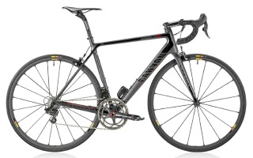
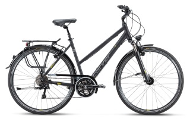
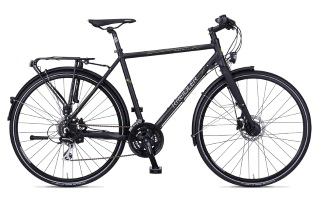
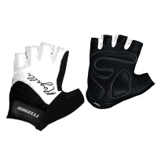
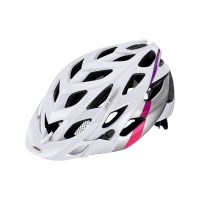
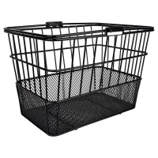
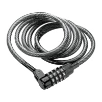
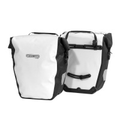

Global Bike - Fahrräder für jede Gelegenheit, egal ob Racing, Touring oder City Bike.
Über uns
Global Bike ist einer der führenden Anbieter von Fahrrädern für alle Gelegenheiten. Unser Sortiment bedient sowohl alle Rennsportler sowie den gemütlichen Radfahrer mit gehobenen und höchsten Ansprüchen. Neben einem schicken Design legen wir bei der Sortimentsauswahl vor allem viel Wert auf eine ausgewogene Zusammenstellung der technischen Komponenten. So überzeugen die Bikes nicht nur durch einen fairen Preis, sondern auch mit ausgezeichneten Fahreigenschaften und viel Fahrvergnügen. Im Vordergrund steht bei uns die Kundenzufriedenheit. Sie können sich auf eine bedarfsgerechte Beratung verlassen, bei der Sie garantiert das für Sie passende Fahrrad finden. Wir beantworten fachkompetent Fragen rund um das Fahrrad.
Hochleistung für Rennsportler: Racing Bike
Unsere Racing Bikes sind für lange Strecken mit hohem Tempo konstruiert. Der Bügellenker ermöglicht es während der Fahrt verschiedene Griffpositionen und Sitzwinkel einzunehmen. Racing Bike bedeutet die Reinform eines Fahrrades – kompromisslos auf Effizienz und Geschwindigkeit getrimmt. Leistungssportler werden das geringe Gewicht schätzen – hier ist nur verbaut, was wirklich nötig ist. Hochwertige Komponenten schaffen beste Voraussetzungen für den Wettkampf gegen die Uhr. Einfaches Handling und robuste Fahreigenschaften sind wesentliche Merkmale dieses Rennrades. Die Verwendung von kohlenstofffaserverstärktem Kunststoff und hochfestem Leichtmetall sorgen für außergewöhnlich geringes Gewicht. Gleichzeitig wird ein Höchstmaß an Stabilität und Sicherheit gewährleistet. Selbst Einsteiger erhalten hier ein ideales Sportgerät, um Gefühl für die Anforderungen des Rennsports zu entwickeln und grundlegende Erfahrungen zu sammeln.

Perfekt für die Stadt: City Bike
Das City Bike bietet ein bequemes und sicheres Auf- und Absteigen.
Begünstigt durch ein hochgezogenes Steuerlager und den etwas geschwungenen Lenker, ermöglicht dieses Fahrrad eine aufrechte, sowie nackenschonende Sitzposition.
Alle Cityräder verfügen über eine hochwertige Schaltung mit geringem Wartungsaufwand und einer einfachen Bedienung.
Um das komfortable Fahrgefühl weiter zu unterstützen sind unsere City Bikes gefedert.
Hierbei werden Federgabeln (für Handgelenke, Schulter und Nacken) und gefederte Sattelstützen (für den Rücken) kombiniert.
Die Ausstattung ist mit Lichtanlage, Schutzblechen und Gepäckträger also ideal für den City Alltag.
An den Rädern lassen sich mühelos Körbe für den Einkauf montieren.

Allrounder für weite Strecken: Touring Bike
Wenn sie längere Strecken zurücklegen wollen und in der Stadt wie auch auf unebenem Untergrund den vollen Fahrkomfort genießen und dabei auch Ihre Arbeitstasche oder Gepäck transportieren möchten, dann empfehlen wir Ihnen unser Touring Bike. Durch die komplette StVZO-Ausstattung sind diese Räder die beste Symbiose aus Alltagstauglichkeit und sportlichen Fahreigenschaften. Als Antrieb dient hier eine 14-Gang Kettenschaltung mit geringem Wartungsaufwand und einer einfachen Bedienung. Zur weiteren Ausstattung gehören Schutzbleche und ein stabiler Gepäckträger. Die Sitzposition auf diesem Touring Bike ist moderat bis sportlich und sorgt so für eine gute Kraftübertragung auf das Fahrrad. Sie müssen sich vor Fahrtantritt keine bestimmte Strecke aussuchen. Ihr Touring Bike fährt auch gerne abseits der Straße. Das heißt, wenn Sie einen schönen Wald- oder Feldweg sehen, dann genießen Sie diesen! Eine Federgabel mit gutem Ansprechverhalten dämpft dabei die Unebenheiten und Vibrationen ab.

Produktkatalog
| Artikelbild | Beschreibung | Preis |
|---|---|---|
Racing Bike Gewicht: 7,9 kg |
2200,- € | |
City Bike Gewicht: 12,3 kg |
1400,- € | |
Touring Bike Gewicht: 14,8 kg |
1700,- € | |
 |
Handschuhe Mit Verstärkungen an Handfläche und Daumen, wird zusätzliche Dämpfung und damit auch eine Entlastung der Handgelenke erreicht. |
55,- € |
 |
Fahrradhelm Ein idealer Fahrradhelm mit optimaler Belüftung, maximalem Tragekomfort und Schutzwirkung. |
140,- € |
 |
Fahrradkorb Der Fahrradkorb ist ein praktischer Korb für die Montage auf dem Gepäckträger deines Fahrrads. |
30,- € |
 |
Fahrradschloss Das Stahlkabel Zahlenschloss bietet besseren Schutz gegen Durchschneiden oder Durchsägen. |
25,- € |
 |
Gepäckträgertaschen Das Paar hochwertiger Gepäckträgertaschen zur einfachen Befestigung am Gepäckträger. |
185,- € |
| Alle Preise verstehen sich zzgl. der gültigen gesetzlichen MwSt. | ||